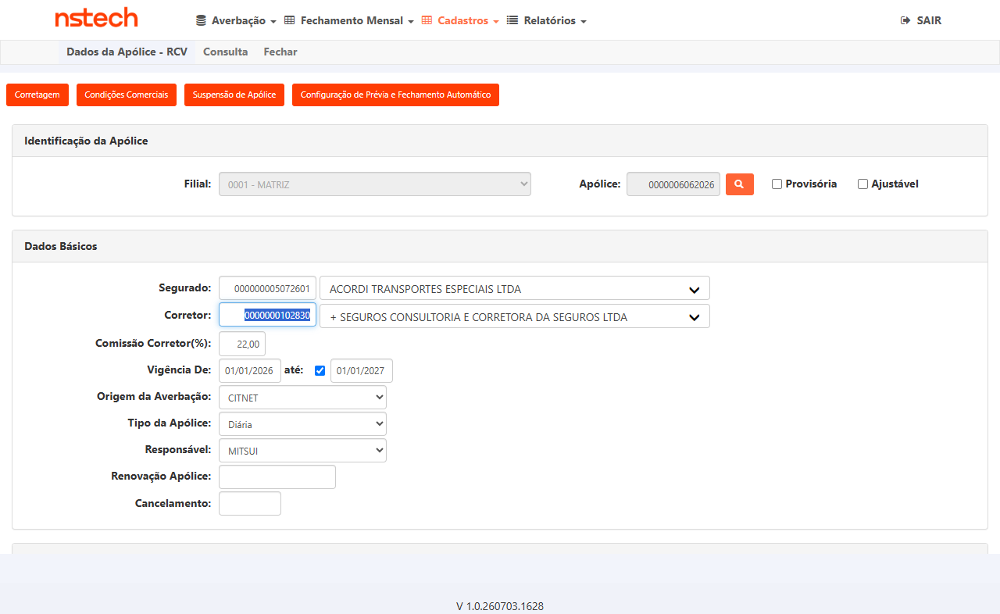
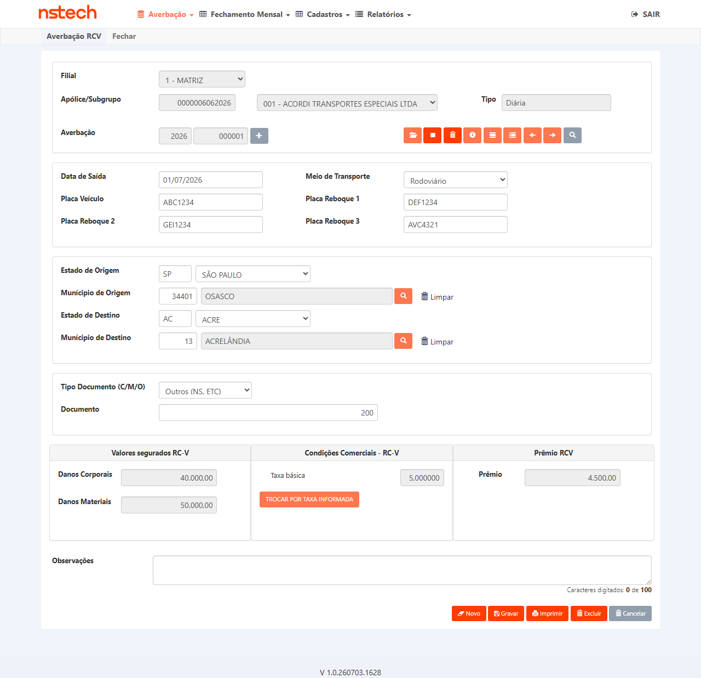
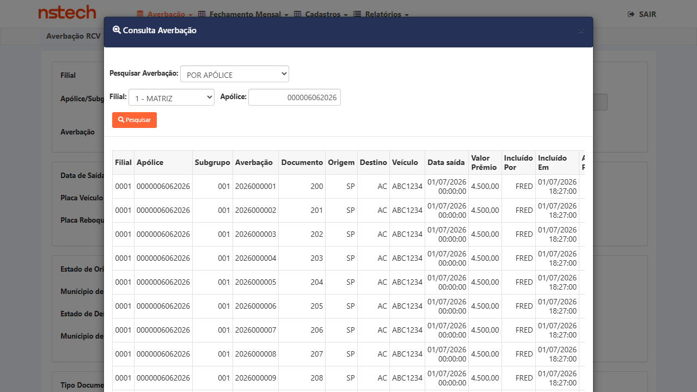

Grupo 1 — Averbação via Integração CARGACITNETNAC
3 ▼tb_apo_cob_lmr vigente. · Base smt-hom-citweb-mitsui · re-verificação SQL 20/07/2026 11:14.
evidencias/CT-DMC-001/ev_DMC001_sql_reverif_20260720-111400.txt.
- Apólice 6062026 vigente 01/01/2026–01/01/2027, não cancelada (
c_org_prd=1). tb_apo_cob_lmrvigente (ramo 59): DM (Danos Materiais) = 50.000 · DC (Danos Corporais) = 40.000.tb_mov_avb_rcv_cit: 189 averbações, todas comv_lmr_dm=50000/v_lmr_dc=40000; batch mais recente (16/07 12:46) comn_usu_inc=CITNET(integração).- Sanidade: 0 averbações com DM/DC NULL ou 0 → nenhum resíduo do comportamento anterior ao fix.
evidencias/CT-DMC-001/ (17/07). A aprovação deste CT apoia-se na re-verificação SQL acima (regra de persistência, fonte definitiva).
- Deploy HML Mitsui com fix aplicado (task #7686 Done)
- Apólice Nacional RCV Mitsui com limites DM e DC configurados na
tb_apo_cob_lmr - Acesso ao CARGACITNETNAC HML ou mecanismo de envio de carga (API / SQL simulado)
- Acesso SQL ao banco HML para verificar tabelas
Objetivo
Verificar que ao processar uma averbação via integração CARGACITNETNAC, o sistema busca os valores de DM/DC da tb_apo_cob_lmr vigente e os persiste na tb_mov_avb_rcv_cit.
Passos
- Via SQL HML, anotar os valores atuais de DM e DC da apólice de teste:
SELECT * FROM tb_apo_cob_lmr WHERE u_id_apo = <id_apo> - Enviar uma carga de averbação para o CARGACITNETNAC referenciando a apólice de teste (via API de integração ou INSERT simulado)
- Aguardar o processamento da carga (verificar log ou status de processamento)
- No CITWEB Mitsui HML, navegar para: Nacional > Averbação > RCV
- Pesquisar a averbação recém-criada pela apólice de teste
- Verificar que os campos DM e DC exibidos na tela correspondem aos valores anotados no Passo 1
- Via SQL HML, confirmar:
SELECT f_vlr_lmt_dm, f_vlr_lmt_dc FROM tb_mov_avb_rcv_cit WHERE u_id_mov_avb = <id_gerado> - Confirmar que os valores na tabela são iguais aos da
tb_apo_cob_lmrvigente
Resultado Esperado
Critério de Aceite
CA: "Dado uma nova averbação via integração, quando os valores de DM/DC forem buscados, então devem vir da tb_apo_cob_lmr vigente e ser persistidos na tb_mov_avb_rcv_cit."
- Cadastro da apólice (
tb_apo_cob_lmr) foi alterado para DM 150.000 / DC 100.000 — evidênciaevidencias/CT-DMC-002/7597-dmc02-apolice6062026-cadastro-dm150-dc100.png. - Consultando a averbação 2026000001 (movimento aberto), a tela exibe os valores gravados DM 50.000 / DC 40.000 — não os 150k/100k do cadastro atual — evidência
evidencias/CT-DMC-002/7597-CT002-averbacao1-gravado-dm50-dc40-vs-cadastro150-100.png. - Confirma a CA: a consulta vem da
tb_mov_avb_rcv_cite não recalcula do cadastro. Só foi possível provar agora porque cadastro (150k/100k) ≠ gravado (50k/40k) — antes eram iguais.


- Averbação criada via CT-DMC-001 com DM/DC históricos registrados
- Acesso de gestor no CITWEB Mitsui para alterar cadastro de limites da apólice
Objetivo
Verificar que ao consultar uma averbação já gravada (movimento aberto), o sistema exibe os valores de DM/DC da tb_mov_avb_rcv_cit — e NÃO recalcula com o cadastro atual da apólice.
Passos
- Anotar os valores de DM/DC da averbação criada no CT-DMC-001 (da tb_mov_avb_rcv_cit)
- No CITWEB Mitsui, alterar os limites de DM e DC no cadastro da apólice para valores diferentes (ex: aumentar em 50.000)
- Retornar para Nacional > Averbação > RCV
- Pesquisar a averbação criada no CT-DMC-001 (mesmo movimento)
- Verificar que os valores DM/DC exibidos são os originais (do momento da inclusão), não os novos valores do cadastro
- Via SQL confirmar que tb_mov_avb_rcv_cit mantém os valores originais
Resultado Esperado
Critério de Aceite
CA: "Dado um movimento aberto já gravado, quando o usuário consultar a averbação, então os valores exibidos devem vir da tb_mov_avb_rcv_cit e não devem ser recalculados a partir do cadastro atual."
- ✓ 2ª metade (integridade histórica) — APROVADO: após o cadastro ir para DM 150.000/DC 100.000, as 189 averbações antigas mantêm DM 50.000/DC 40.000 (SQL
tb_mov_avb_rcv_cit). Valores históricos preservados. - ◐ 1ª metade (nova averbação usa novo limite) — PENDENTE: exige uma nova carga
CargaCitNetNacna apólice (limite já 150k/100k) para confirmar que a nova averbação grava 150k/100k. Sem gatilho acessível ao QA (WebJob server-side) → depende do dev/José. Não há averbação nova após 16/07.
- CT-DMC-002 executado — apólice com limite DM/DC alterado
- CARGACITNETNAC disponível para envio de nova carga
Objetivo
Verificar que averbações incluídas após a alteração do cadastro da apólice usam o novo limite de DM/DC, enquanto as averbações anteriores mantêm o histórico.
Passos
- Com os limites DM/DC alterados no CT-DMC-002, enviar uma nova carga de averbação via CARGACITNETNAC para a mesma apólice
- Aguardar o processamento
- No CITWEB, pesquisar a nova averbação
- Verificar que os valores DM/DC desta averbação correspondem ao novo limite do cadastro
- Comparar lado a lado: averbação antiga (CT-DMC-001, valores originais) vs. nova averbação (novos valores)
- Via SQL: confirmar que tb_mov_avb_rcv_cit armazena valores diferentes para cada averbação conforme o momento de inclusão
Resultado Esperado
Critério de Aceite
CA: "Dado uma alteração posterior no limite da apólice, quando novas averbações forem incluídas, então elas devem usar o novo limite, mantendo as anteriores com o valor histórico."
Grupo 2 — Regressivo — Averbação Manual
1 ▼- Deploy HML Mitsui com fix aplicado
- Apólice Nacional RCV Mitsui disponível
- Credenciais CITWEB Mitsui:
ROT_AUTO / •••••• (senha no .env)
Objetivo
Verificar que o fix do CARGACITNETNAC não afetou o fluxo de averbação manual via CITWEB UI, que deve continuar exibindo e gravando DM/DC corretamente.
Passos
- Acessar
https://mitsui-hml-faturamento.nsseg.com.br/login/comROT_AUTO / •••••• (senha no .env) - Navegar para Nacional > Averbação > RCV
- Iniciar inclusão de nova averbação para a apólice de teste
- Verificar que os campos DM e DC são exibidos na tela de inclusão com os valores do cadastro da apólice
- Preencher os campos obrigatórios e clicar em Gravar
- Verificar mensagem de confirmação de gravação bem-sucedida
- Consultar a averbação gravada e confirmar DM/DC corretos
Resultado Esperado
Grupo 3 — Cenários complementares (solicitados pela Fabiola no Gate 2)
2 ▼u_sgp=1) e persistem DM 50.000 / DC 40.000 na tb_mov_avb_rcv_cit, coerentes com o limite vigente na inclusão. Grade de consulta por apólice/subgrupo confirma filial 0001 · sgp 001 · ACORDI — evidência evidencias/CT-DMC-005/7597-grid-averbacoes.png. Regra de DM/DC opera corretamente com subgrupo.

- Deploy HML Mitsui com fix aplicado
- Apólice Nacional RCV Mitsui com subgrupo(s) configurado(s) e limites DM/DC na
tb_apo_cob_lmr - CARGACITNETNAC disponível (ou inclusão manual) para a apólice com subgrupo
Objetivo
Cenário solicitado pela Fabiola (Gate 2). Verificar que a regra de DM/DC funciona corretamente quando a apólice possui subgrupo — os limites corretos são buscados na tb_apo_cob_lmr (considerando o subgrupo) e persistidos na tb_mov_avb_rcv_cit.
Passos
- Via SQL, anotar os limites DM/DC da apólice+subgrupo de teste na
tb_apo_cob_lmr - Incluir uma averbação (via CARGACITNETNAC ou manual) para a apólice informando o subgrupo
- Consultar a averbação em Nacional > Averbação > RCV e verificar os campos DM/DC
- Confirmar via SQL na
tb_mov_avb_rcv_citque DM/DC correspondem ao limite do subgrupo
Resultado Esperado
/Nacional/RecalculoAverbacoes/RecalcularAverbacoes deu HTTP 500 e a tela "Ocorreu um erro inesperado". Nada mutou (avb segue 50k/40k). Investigação de código: RecalcularAverbacoes → RecalcularAverbacaoBloco → CalculaPremio.CalculaPremioNacional — não invoca ObtemPremioMinimoNacional/tb_pmo_min_apo_fch, logo NÃO é a família do #7896. Exceção logada em arquivo no servidor (inacessível ao QA). Aberto Bug #7934 (Related #7597, AssignedTo Diego) pedindo o log p/ a causa exata. Evidência evidencias/CT-DMC-006/7597-CT006-recalculo-resultado.png.

- Averbação existente com DM/DC gravados (ex.: resultado do CT-DMC-001)
- Acesso de gestor para alterar o limite DM/DC no cadastro da apólice
- Acesso ao Recálculo de Averbações (Nacional > Averbação > Recálculo de Averbações)
Objetivo
Cenário solicitado pela Fabiola (Gate 2). Distinto do CT-DMC-002 (consulta simples mantém histórico): aqui, após alterar o limite da apólice e executar o recálculo, os valores de DM e DC da averbação devem ser ATUALIZADOS para o novo limite.
Passos
- Anotar os valores DM/DC atuais da averbação de teste (tb_mov_avb_rcv_cit)
- Alterar o limite DM/DC no cadastro da apólice (ex.: aumentar 50.000)
- Executar o Recálculo de Averbações para a apólice/movimento
- Consultar a averbação recalculada e verificar que DM/DC refletem o novo limite
- Confirmar via SQL na
tb_mov_avb_rcv_citque os valores foram atualizados após o recálculo